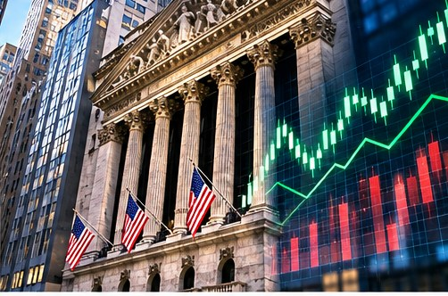

TEXAS NEWS STUDIO / NEWS
MARKETS · NOVEMBER 7, 2026
WALL STREET RALLIES AFTER MIDTERMS

TNS EDITORIAL NOTE: This is an original news brief and analysis of publicly discussed developments, not a claim of firsthand reporting. The image is a conceptual illustration, not documentary photography.
Stocks and investors are reacting to the election results, with attention turning to the policy outlook.
Why markets move
Investors constantly reassess expectations for taxes, regulation, interest rates, corporate earnings, and government spending. Election results can change those expectations, but they are only one influence on stock prices. A market move on a particular day does not prove a single political cause.
What matters beyond one session
Watch whether gains are broad or concentrated in a few large companies, how bond yields behave, and what businesses say about future earnings. Short-term market reactions can reverse quickly.
For ordinary Texans
A rally may improve retirement-account balances, but it does not automatically reduce grocery bills or borrowing costs. The useful question is how the underlying economy is performing, not whether a television graphic is green for the afternoon.
Tex's Take | TNS Commentary
My view: the most useful thing a news outlet can do is separate what is known from what is merely being predicted. Big headlines are easy. Following the documents, the numbers, and the consequences for ordinary people takes more work. And if every prediction of disaster came true, we'd all need a second calendar just to schedule the emergencies. We'll keep watching the facts, and we'll update the story when the evidence changes.